The DNA of P.E.I. Postcards, Part Four: A Handwritten Trail Through Montague
A canoe on the river, a fox in the snow, a bridge dressed with flags. Across these Montague postcards, a few white letters may preserve the working habits of a local photographic studio. Follow the curls, crossbars and small clues that lead towards William Cumming.
Two people sit in a canoe close to the bank. The river stretches away behind them, and the town is a small cluster in the distance. It is an easy picture to like. Turn card 4618 over and Milton has already said as much to his mother: “Don’t you think this is a pretty view.” He adds that the high building is the post office, giving her a landmark to find.
Our own search begins closer to the edge. In the lower-left corner, someone has fitted “Montague River, P.E.I.” around the photograph. The letters have personality. The g curls back on itself, the R reaches a long way to the left, and a capital-shaped A appears in the middle of Montague.
Put the mink-ranch card 4602 beside it and that manner of writing looks familiar. More Montague views follow: a bridge, a house, a fox ranch, a ship’s crew. Could a caption help us find the person behind a body of photographs?

A studio in the snow
William A. Cumming gives the search a local starting point. Harry Holman’s research traces him from England to Canada and then to the Island around 1900–01. William and his brother John travelled with the Canadian Gem Photo Company; William subsequently established a studio in Montague. By 1915 the business was operating as Cumming and Jordans. He died in 1926.
The museum photograph below brings the business down to street level: snow against the building, figures outside, and the Gem Photo Co. sign over the entrance. The source dates the view to about 1905 and identifies the man outside as probably Cumming. It is a welcome glimpse of the place where photographs became objects people could carry home or put in the post.
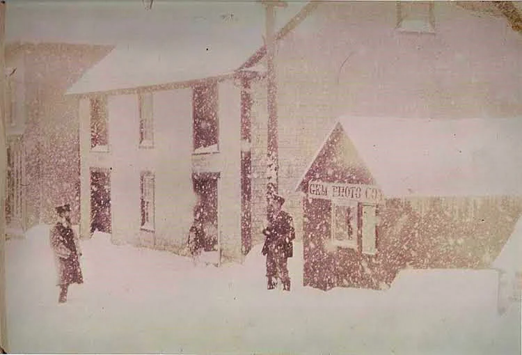
Reading a hand across several pictures
White handwriting is common on real-photo postcards. Here the useful clues are the particular shapes: the looping g, the angular A, the generous cross-strokes, and the mixture of capitals and lowercase letters within a single word. Their combination is more persuasive than any one letter.
The comparisons below preserve the captions as they appear in the scans. There are variations in size, angle and neatness. A caption squeezed into a corner naturally looks different from one spread across an open strip of foreground. What catches the eye is the return of the same small habits.
Two connections that carry Cumming’s name
First, the mark on 1121. At the lower right of the steel-bridge photograph, a faint Cumming mark survives beneath the image. This card is already catalogued to W. Cumming. Its caption gives us a named reference beside which to place the river and ranch lettering.
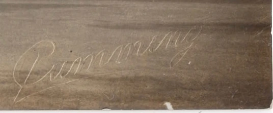
Second, a fox that appears twice. On RPPC 2385, a fox walks through a snowy enclosure beneath the caption “Montague Black Fox Co. Ranch.” Card 0307, published by R. F. Maddigan, reproduces the same photographic image and carries the explicit credit “Copyrighted Photo by Cumming.”
Follow the fox’s legs, the branches, the cabin and the irregular patches of snow. They agree across both versions. This is a confirmed image connection between a white-caption RPPC and a credited printed edition. It gives us another solid place to begin tracing the wider family.


Thirteen views to put together
Here is the proposed Cumming-associated family: twelve clearer candidates and one faded possible member, 2376. The mark on 1121 and the credited image on 2385 provide the anchors. The remaining connections are a working theory based on the captions.
A common hand may be Cumming’s or that of someone preparing pictures in his studio. Photography, captioning and printing could involve several people. For now, “Cumming-associated” best describes what these cards collectively suggest.
Each picture is followed by a detail of its lettering. Open either image to visit the complete postcard record.


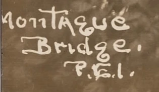


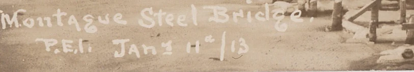

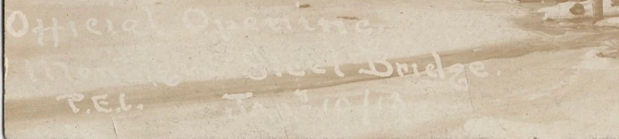

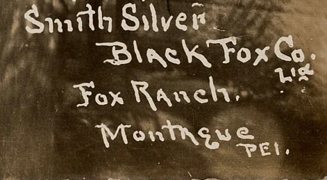
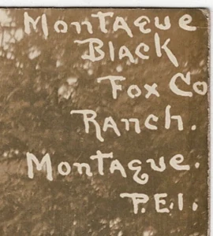

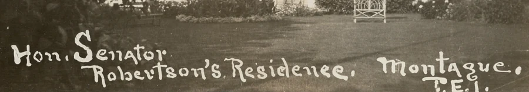

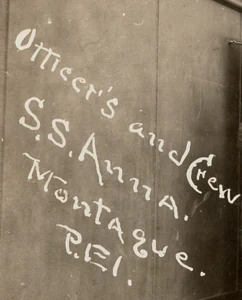

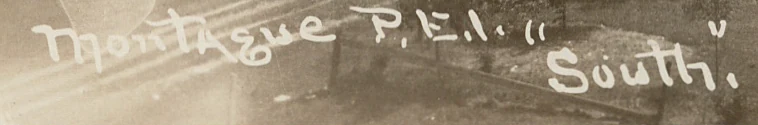

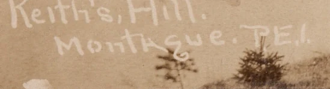

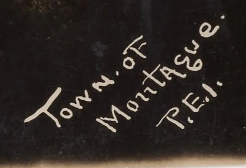
A town emerging from the group
Seen together, the proposed family gives Montague a pleasing range. The canoe and Keith’s Hill views offer quiet water and open space. Senator Robertson’s house has a carefully maintained lawn and a gate ready for the camera. Fox and mink ranches bring us into enclosures where animals, buildings and fences become the subject of a souvenir.
Then there is the new steel bridge. Card 2376 calls its scene the official opening and gives 10 January 1913. The captions on 1121 and 3950 give the following day. The different positions let us move around the structure, from a broad side view to a look along its entrance. Flags help make the occasion visible.
The message on 2376 supplies a wonderfully everyday response. Writing to Johnnie, the sender calls it “our new bridge,” then offers an opinion: “They could have made a better job but it’s a little better than the old one.” The Montague postmark is 12 February 1913. A civic improvement has become a postcard, and the postcard has carried a local verdict to Minnesota.
The S.S. Anna crew portrait takes the proposed group aboard a visiting ship. Its slanting caption has room for the officers, crew, vessel and town. The Norwegian message on the reverse gives that photograph another life beyond Montague. The handwriting resemblance makes it a promising Cumming candidate; the ship and its visit have their own story elsewhere on the site.
Another journey for the bridge photograph
The handwriting search also turns up a further example of postcard DNA. The photograph on 0937 reappears on 1344, surrounded by a pale border and supplied with a printed title. The second version crops the scene more tightly.
The small foreground details bring them together: the flowerpot beside the railing, the hanging leaves at the left, the blurred foliage at the lower right, and the reflections beneath the bridge. Their agreement establishes the shared photograph. Card 1344’s publisher remains unidentified; its connection to Cumming follows the tentative attribution of 0937.

The other white-caption families
Montague’s white captions have several different characters. Keeping these groups together lets us enjoy the views while leaving room for more than one studio, lettering hand or period of production.
The curled E and the little looped I
Two views make an especially good pair. The bridge on 4620 and the waterfront on 4629 share a curled E and an I that almost resembles a 9 in “P.E.I.” Their joined script also has a similar rhythm. Copies 4621 and 4631 repeat those two views. Card 4628 is a possible companion, with flowing Montague lettering but simpler E and I shapes.

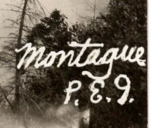

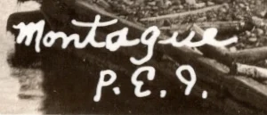

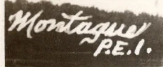
These belong together as a handwriting comparison; the person behind the lettering remains unidentified. The postal history also reminds us how long an image could circulate: 4620 was used in 1944. That date belongs to the card’s journey through the mail, while the photograph has its own earlier history to establish.
The sweeping capitals
The M on Main Street card 4595 has a much larger sweep. The river view from the post office, 3694, is worth placing beside it for its looped capitals and long crossing strokes. The potato-shipping card 3691 offers a third, looser comparison. It stays at the edge of this proposed group until another marked example or a closer run of matching letters comes along.

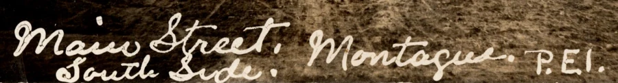

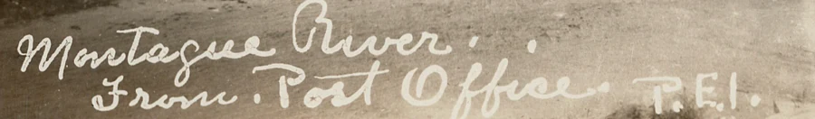

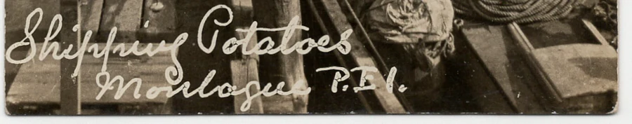
The smaller rounded letters
A quieter style appears on 3283, 3425 and 3736: small, rounded lettering, with Velox photographic-paper backs. The stream view also survives as 4577. Shared paper supports the comparison as a physical feature of the cards, although photographers could buy the same stock from the same suppliers.

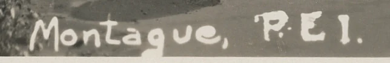

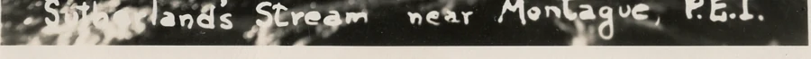

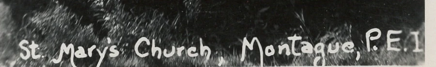
Four further captions to keep in view
These provide useful comparisons around the edges of the groups: ornamental script on 3692, heavy rounded letters on 2540, and smaller captions on 3705 and 3706. Their authorship remains open.

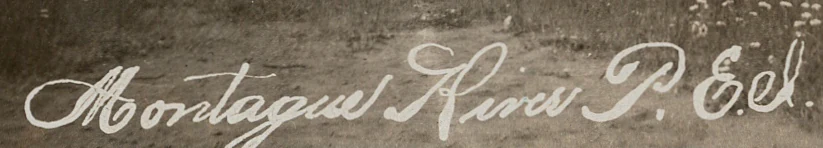

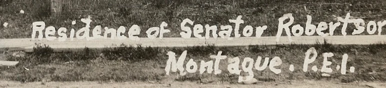

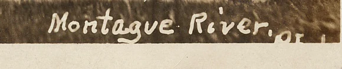

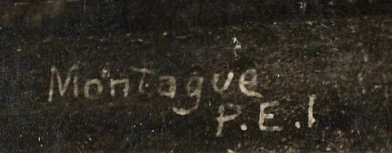
Following Cumming into Warwick & Rutter
Warwick Bros. & Rutter printed a substantial selection of Island views carrying Cumming’s name. Some editions add an s, crediting “Cummings.” The collection’s examples take us along Montague’s river, past its post office and out to Georgetown, the Dunk River and North Cape. They offer a second body of pictures against which to test the RPPCs.
The four examples below carry printed Cumming or Cummings credits. Each is a useful target for a future photographic-postcard match.


The Warwick & Rutter RPPC trail remains open. This review has yet to establish an exact RPPC counterpart for the Cumming-credited Warwick & Rutter views examined. The firm’s shipping scene is a tempting example of how close the subject can be while the photograph differs.

Both photographs belong to the working waterfront: schooners, rigging, produce and men handling cargo. On 3691 we look along a narrow stretch of wharf; the Warwick & Rutter card opens across the vessels from another position. They are separate photographs. Their proximity in subject makes the RPPC worth keeping in the search, with its photographer still to be established.
The firm therefore adds a set of named photographs to the investigation, while Maddigan supplies the exact image match between an RPPC and a printed card already demonstrated by the fox. The uncredited bridge edition gives us another route by which a picture travelled. Each connection enlarges the picture of how Montague’s views reached the postcard rack.
What a little white g can give us
The people who bought these cards could choose a bridge, a river outing, a handsome house or a busy wharf. A century later, those same purchases can help gather a photographer’s work back together. The lettering has survived along with the landscape.
For this family, two small pieces of evidence have been especially generous: a faint name in the corner of a bridge photograph, and a printed credit beneath a fox. They give the thirteen candidates a promising centre. The other hands remain beside them, ready for a newly found signature, a duplicate with a clearer caption, or another photograph from the studio.
And the canoe on Milton’s postcard still sits close to the bank. He wanted his mother to notice the pretty view. Looking a little longer has given us the beginnings of a story about the people who made it.
Sources, comparisons and what remains open
The primary evidence is the collection’s postcard fronts and backs. The review began with 231 records labelled Montague in their title or location, followed by closer caption and reverse comparisons. Warwick & Rutter views were compared with Montague material and relevant Georgetown, Dunk River and North Cape candidates. A blank space in that search describes the present collection and review; further copies may extend the connections.
- Direct attribution anchors: the Cumming mark on 1121; the matching image on 2385 and Cumming-credited Maddigan 0307. Other copies of the Maddigan fox view are 0327 and 1857.
- Confirmed additional image match: 0937 and 1344. The publisher of 1344 and the broader attribution of the photograph remain under investigation.
- Working theories: the wider Cumming-associated lettering family, with 2376 the faded possible member; the script and rounded-letter groupings; and the identity of the people who wrote their captions.
- Historical context and studio photograph: Harry Holman, “William Cumming’s postcards,” STRAITPOST, 25 February 2017. The studio photograph is credited there to the Town of Montague, Garden of the Gulf Museum Collection; the identification of the man as Cumming is tentative.
- Publisher reference: Holman’s illustrated Warwick Bros. & Rutter catalogue, used alongside the actual cards. Publisher numbers such as 2467 are distinct from this collection’s four-digit catalogue numbers.
Image comparisons reviewed November 2026. Cropped caption details reproduce the scans. The matching images establish shared photographic material; their order of publication remains open. Dates in captions describe what those captions say; postmarks date postal use. The proposed handwriting groups leave the catalogue’s existing photographer fields unchanged.
← Part Three: Bayer’s Name in the Margin · Part One: Pugh’s 524 Series · The S.S. Anna at Montague